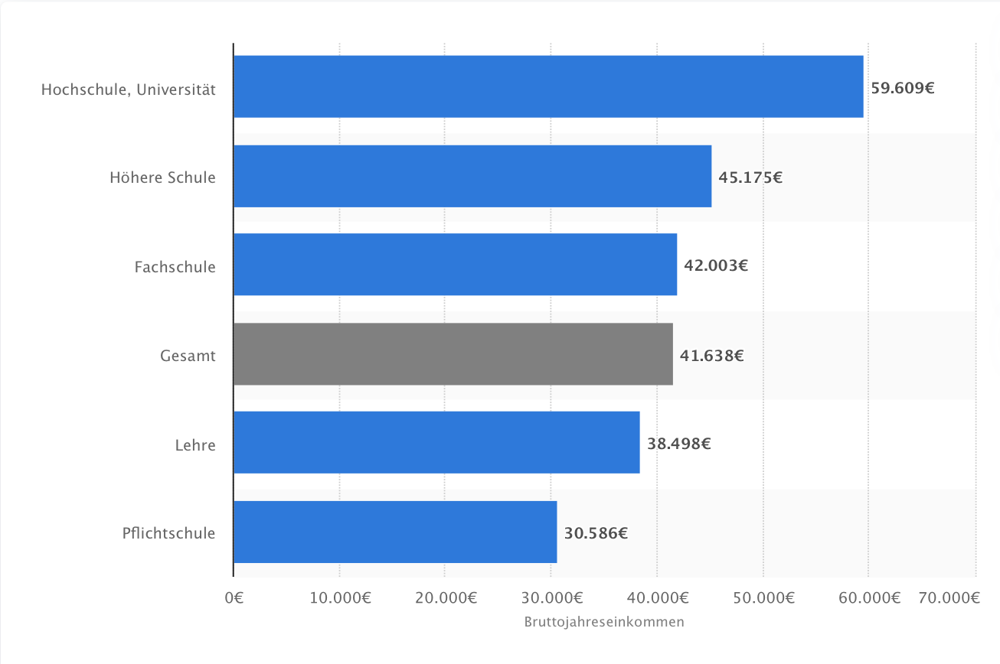

Lecturer:
Andreas Steinmayr
University of Innsbruck
Fall 2023
Core reading: Gertler, chapters 1 and 2
Mean annual earnings of full-time workers in Austria 2017
 Source: Statistik Austria, Statista 2022
Purpose of this course
Understand program evaluation as a
consumer
Synthesize and understand evaluation results
Evaluate the quality of policy evaluations or choose between
evaluation proposals
Make evidence-based decisions
Provide skills to design and implement program
evaluations
Many economists work on evaluations, not only in academia
Why do we evaluate programs?
Policy and program will be used as
synonyms
Lots of money is spent every year to try to change things:
Government-provided job training programs
Sugar-tax to reduce obesity
Subsidies to increase R&D investment in firms
Incentive schemes to increase worker productivity
We want to know:
What difference have these programs made?
What outcomes have been affected? By how much and for whom?
Broader agenda: Evidence-based policy making
Policy decisions informed by rigorously established evidence
In reality often: Policy-based evidence making
Based on the idea of evidence-based medicine
Goal: Inform allocation of resources, guide policy decisions,
enhance accountability
Build general knowledge about the effectiveness of policies
Which policies should we evaluate?
Evaluations are costly, especially data collection
What are the stakes of this policy?
Budget
Size of target population
Potential effect sizes
Evaluate if the policy is:
Innovative: new and promising
Replicable: can be scaled up or applied in a different setting
Strategically relevant: flagship initiative, requires substantial
resources, could have large (side) effects or generate substantial
savings
Untested: Little is known about the effectiveness of this type of
policy
Influential: Results will be used to inform key policy
decisions
Common errors
People without knowledge in program evaluation tend to confuse:
Monitoring and evaluation
Correlation and impacts
Examples:
“The program was successful: 72% of participants find a job after
job training”
“I feel better today because I took Globuli yesterday”
“She has a high income because she studied economics”
“Aztecs: Without human sacrifices of children, rain would not come,
and crops would not flourish”
This can be extremely misleading
Simpson’s (1951) paradox
Event C increases the probability of E in the population, whereas it
decreases the probability of E in all sub-populations
Example: Taking a particular pill is helpful for the population but
harmful for men and women
Combined
Recovery (E)
Not E
Sum
Recovery Rate
Drug (C)
20
20
40
50%
No drug (not C)
16
24
40
40%
What is impact evaluation?
Monitoring tracks what is happening with a program,
looks at the program implementation
Is the money indeed spent the way it was supposed to be?
Impact evaluations seek to answer a
cause-and-effect question
Which changes are directly attributable to a program?
What is the effect of obtaining a university degree on
earnings?
Prospective versus retrospective evaluation
Prospective evaluation
Set up at the same time as policy
Built into policy implementation/roll-out
Retrospective evaluation
Policy evaluation after implementation
PE is more likely to produce credible evaluation results
(Baseline) data collection on treated and controls
Creates focus on policy objectives
Easier to construct credible counterfactual
Efficacy studies and effectiveness studies
Efficacy studies
Carried out in a specific setting under closely controlled
conditions
Small-scale pilot/proof of concept
Effectiveness studies
Interventions that take place in normal circumstances, using regular
implementation channels
Aim to produce findings that can be generalized to a large
population
Internal versus external validity
Internal validity
Evaluation identifies causal effect of program in a given
setting
Varying degrees of credibility (RCT: Gold Standard)
External validity
Generalizability of causal effect to other situations
Informative for a larger or different population, different
time
Cost-benefit and cost-effectiveness analysis
Cost-benefit analysis
Estimates the total expected benefits of a program, compared to its
total expected costs.
Seeks to quantify all of the costs and benefits of a program in
monetary terms and assesses whether benefits outweigh costs.
Cost-effectiveness analysis
Compares the relative cost of two or more programs or program
alternatives in reaching a common outcome
Impact evaluation estimates the benefit side, and cost analysis provides
the cost information! We focus on impact
evaluation.
Preparing for an evaluation
Specify the evaluation question
Construct a theory of change
Develop a results chain
Select indicators to assess performance
Evaluation question
First step: Formulate a clear study question
What is the impact of the policy on an outcome of interest?
Which changes are directly attributable to a program?
Needs to be framed as a well-defined, testable
hypothesis
Are these good evaluation questions?
What is the effect of studying economics on later earnings?
What is the effect of being a woman on the likelihood of becoming a
politician?
What is the effect of reducing the speed limit on highways from 130
to 100 km/h on the number of traffic deaths?
Theory of change
Describe the causal pathway (sequence of events from policy to final
outcomes)
Formulate necessary assumptions and enabling conditions
Include all stakeholders
Consult existing literature
Results chain
Results chain
Results chain - example
Government agency provides training about settlement to immigrants
Inputs: Staff from government agency, trainers,
facilities, government budget, contact information of immigrants
Activities: Design curriculum of training, select
and prepare trainers, design, prepare, and distribute written
material
Outputs: Number of immigrants trained, number of
written materials provided
Outcomes: Immigrants behave differently based on
information provided
Final outcomes: Immigrants are (economically) more
successful, higher well-being, less welfare spending for immigrants,
reduced social tensions
Performance indicators (Outcomes)
Ideally use indicators along the whole results chain
Not only final outcomes
Understand mechanisms
Especially important if evaluation finds no effect on final
outcome
Selection of indicators should involve stakeholders
SMART indicators
Specific: Translates required information into
operational measure
Measurable: Information can be measured and
obtained
Attributable: Indicator is linked to the policy’s
efforts
Realistic: Information can be obtained timely, with
reasonable frequency, at reasonable cost